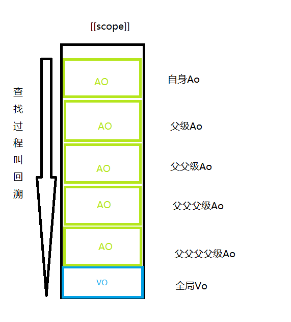

Js 作用域和作用域链
作用域指的就是 变量和函数 能在哪些区域能调用和使用
划分区域一般指得都是函数或with、let和const（暂时性死区）、script标签等来划分作用域
变量和函数作用域需要区分
全局变量：声明函数的script标签内部和接下来要执行的script标签，声明变量之后调用都能访问到，声明之前调用得到undefined
局部变量：声明变量之后函数内部或子函数都能访问到，声明之前调用得到undefined
全局函数：声明函数的script标签内部和接下来要执行的script标签都能调用
局部函数：在声明函数的环境内或自身内部或 其子函数都能调用
(function(){
abc=111;
})()
console.log(abc)//111
(function(){
console.log(abc)//undefined
var abc=111;
})()
console.log(abc)//ReferenceError上述代码中：
第一个自执行函数内部，因没有声明关键字，自动把abc变量挂载全局对象下，所以函数外部才能访问变量abc
第二个自执行函数内部，输出adc undefined因下面有var 声明关键字，造成变量提升（后面我会讲到变量提升原理），子执行函数外面抛出引用错误，因全局对象下没有abc变量
var g = 0;
(function(){
console.log(g)//0
fnA()//ok
function fnA(){
var a = 1;
console.log(g);//0
console.log(a);//1
console.log(b);//ReferenceError
function fnB(){
var b = 2;
console.log(g);//0
console.log(a);//1
console.log(b);//2
fnB（）//ok
}
fnB()//ok
fnA()//ok
}
})()
console.log(g);//0
console.log(a);//ReferenceError
console.log(b);//ReferenceError
上述代码:
变量b 能在自身声明内部调用，不能再外部调用
函数fnB 能在自身环境 自身内部 和自身子函数调用 不能再创建自身环境 父级调用（闭包除外）
前面讲解了什么是作用域，下面说说 作用域链
作用域链的用途，是保证对执行环境有权访问的所有变量和函数的有序访问。《出自javascript高级程序设计第四章》
解释上述代码执行过程之前先说一下预编过程
一、全局
二、函数
《javascript高级程序设计第四章》中解释到：作用域链的前端，始终就是当前执行的代码所在的环境里的AO（活动对象）,我把[[scope]]对象比作成数组,数组的第一项就是自身AO对象，第二项就是父函数的AO对象，以此类推直到全局对象VO，如果自身函数活动对象AO没有要查找的变量，就向父级函数对象查找，直到VO对象，如果都没有就会抛出引用错误异常。（这种行为叫回溯）

用作用域链解释一下上述代码的执行过程和为什么报错：
首先预编译过程
一、首先创建VO对象
二、检测变量声明，查看VO对象有没有属性g，如果没有向VO对象上创建属性g，如果有不做任何操作，赋值压入执行栈
三、自执行函数形成执行上下文，压入执行栈
四、剩下的三个console依次压入执行栈
五、预编译结束开始执行
执行过程：
一、var g = 0 当前代码的执行是window，找到window下的属性对象[[scope]](也就是作用域链),，里面保存着VO对象，在VO对象上找到属性g 并赋值0
二、执行 自执行函数上下文，进行预编译
预编译：
一、创建AO对象
二、arguments对象内的参数和方法挂载到AO上
三、检测到函数fnA声明，在AO上创建fnA属性并赋值函数fnA的函数体
四、预编译结束开始执行
执行过程：
一、执行console.log(g) console就不进去再说了。。直接说输出g 找到当前代码执行环境里的属性对象[[scope]]的自身Ao，找g属性发现没有，回溯查找到VO对象，找到属性g并输出
二、执行 fnA() 找到当前代码执行环境里的属性对象[[scope]]的自身Ao，找到fnA属性
三、执行找到的fnA函数体
依次类推。。。。
function fn(){
console.log(a)//undefined
var a=1111;
}
fn();
预编译进入fn函数 创建Ao对象 声明变量a ，查到自身Ao对象上没有属性a ，在Ao对象上创建属性a
执行console.log(a) 找到当前代码执行环境里的属性对象[[scope]]的自身Ao，找到a属性 这时候属性还没有赋值 输出默认值undefined，（这地方解释了变量提升）
再来个例子：
function wrap(a){
console.log(a)//f a(){console.log('函数声明')}
var a = 1;
function a(){
console.log('函数声明')
}
a();//a is not a function
a = function(){
console.log('函数表达式')
}
a();//函数表达式
}
wrap(11111);编译过程：
1、创建函数对应AO对象，把arguments内的属性和方法添加到AO对象上，
2、Var a查看AO有a属性吗，检测到有a属性（形参上有a属性），不做任何操作
3、编译到function a(){console.log('函数声明')},查看AO上有a因为是声明函数所以把function a(){console.log('函数声明')}赋值给AO.a
4、编译到a=function(){console.log('函数表达式')}变量赋值查看到AO有a不做任何操作
执行过程：
1、console.log(a) ； 找到代码执行环境的Ao对象因对象有a属性，输出函数声明a的函数体
2、var a = 1; 找到Ao下的属性a赋值1
3、function a(){console.log('函数声明')}； 函数声明执行阶段不做操作，因为a是number类型1 所以进行函数执行报错、
4、a=function(){console.log('函数表达式')} ； 找到自身环境Ao下的属性a 赋值 函数体
5、a()； 找到自身环境Ao下的属性a 执行输出 //函数表达式
了解作用域后，我们知道为什么会变量提升 ，我们也知道 js查找一次变量的消耗，所以我们尽可能地把全局的变量 赋值到的函数体内部使用，还有避免递归内使用全局变量
下面出个例子大家猜一下输出内容：
var _var = 22;
function wrap(_var){
console.log(_var)
var _var = 11;
return function _var(){
console.log(_var)
}
}
wrap(1111)();